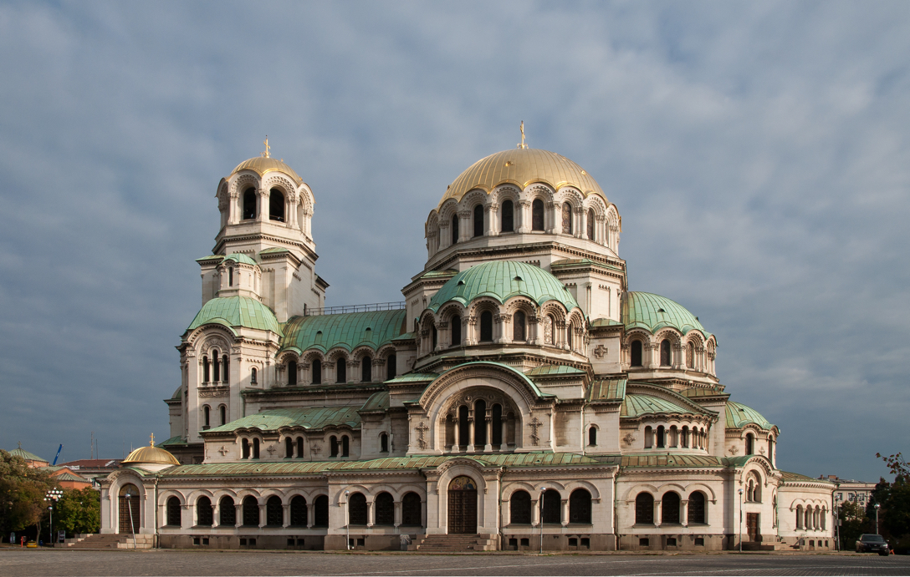

Welcome to Sofia!
Hello everyone! Svetlozar T. from the EuRuKo 2016 team here, bringing you some more info about Sofia, the host city of this year's conference. If it is your first time coming to Sofia, do not worry - the end of September usually still retains the charm of late summer, minus the hot weather.

In our first blog post, let us cover some basic info about getting around Sofia, namely public transport and accommodation.
Affordable public transport
Public transport in Sofia is cheap. There are three types of it - buses, trams and underground railway (Metro). We recommend using the Metro for your visit here, as it should be the easiest way for you to get to and from the venue.
The ticket machines at the Metro stations only sell single-ride tickets, at the price of 1.6 leva, or 80 eurocents. While most of them accept only coins, you can use paper money at some of them. Make sure you have banknotes of 2, 5 or 10 leva, as they do not accept banknotes of 20 and above. Also, if you are traveling with bulkier luggage (if the dimensions exceed 60х40х40 cm), make sure to take another ticket for your luggage.
There are only two lines of underground trains in Sofia - Line 1 (red), and Line 2 (blue). Line 1 connects the districts of Lyulin and Mladost, while Line 2 connects the Obelya and Lozenets districts. The National Palace of Culture (NDK) station is on the blue line. If you are coming directly from the airport, you should change at Serdika station (red) and take the train in the Lozenets (blue) direction. You will need to get off at the next station – NDK.
If your flight arrives late, your only option might be taking a taxi to the city center. You may want to avoid taking a taxi from the drivers right at the arrival section. On both terminals, there are regulated taxi stops. It might be better to use them. Take a look at the prices (usually located on back seat window), and make sure that the “TRANSPORT (leva per km)” price is not more than 1.00 lv.
Hotels
There are many hotels around the venue. We recommend that you book one in downtown Sofia, preferably, in a walking distance of the venue. As usual, the earlier you book, the better chances you have to get a room at a conveniently close hotel.
The ones closest to the venue are:
There are some cheaper alternatives, which are also close-by:
If you feel like it, you can choose to stay at one of these fancy hostels:
And, of course, Airbnb is always an option. Make sure to book early in order to get the closest and cheapest listings. If you do not find anything suitable around the venue, check out the listings around underground stations, such as Joliot Curie, James Bourchier, European Union.
Hope you have found this info useful. In our next blog post, we will learn some more about the city and its sights. Stay tuned!